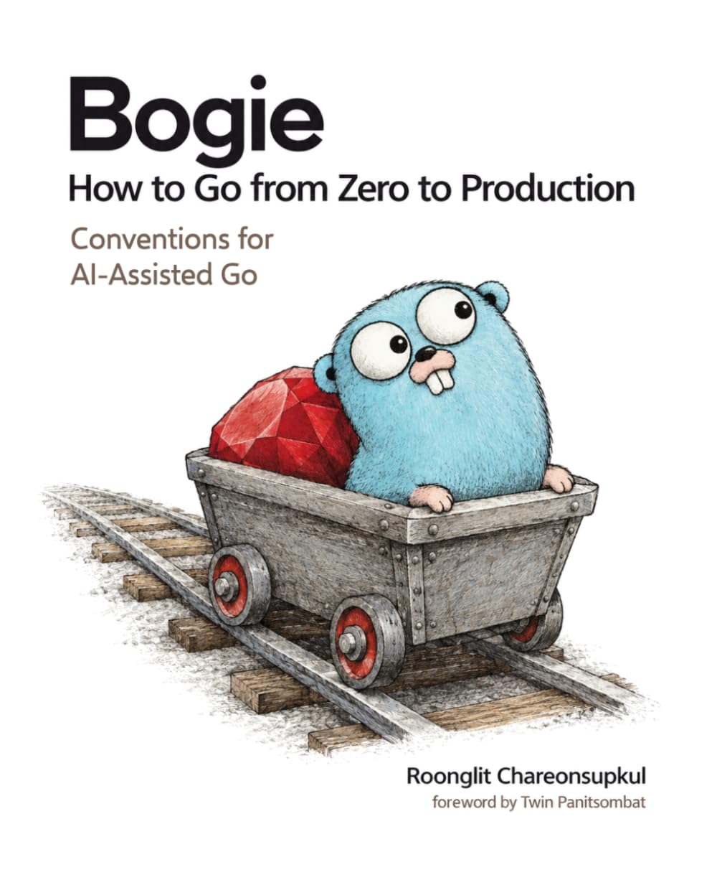

The book
Bogie: How to Go from Zero to Production
Conventions for AI-Assisted Go
Kindle $9.99 · Paperback $24.99
Also on Leanpub (PDF + EPUB, DRM-free)Following the printed book? See troubleshooting.
The pitch
Learning Go has one challenging part, and it isn't the language: there's too much information out there, and everyone does Go their own way. Bogie: How to Go from Zero to Production gives you conventions a whole team can share, and a generator that follows them, so you can deliver value with Go quickly. You'll build Bogie Depot, a complete online shop: a JSON API with small HTML pages in front of it, so you can see every feature in a browser. It is built with Bogie, a Rails-style code generator for Go web apps. The book pins Bogie v1.0.0, so what you see matches what you read. Bogie isn't a framework: the code it generates is ordinary Go, and it belongs to you.
Who it's for
This book is for an experienced programmer who has built web applications before, but doesn't yet have Go, or a shared way to structure a Go web app. Newer programmers, and readers new to Go, are welcome too: you don't need Rails, and Chapter 2 teaches the Go you need. When you start Chapter 1, you won't have written a line of Go. By the end you will have a catalog, a cart, accounts, checkout, an admin area, tests from the outside in, and a deployment to your own server — plus a clear picture of what Bogie generates, and how to work with an AI assistant without letting it hand-edit generated files.
Troubleshooting
If you're typing along with the printed book (v18, which pins Bogie v1.0.0), these are the places a reader can get stuck. Each one is also in the companion repository's chapter README, under "If you're following along."
Chapter 10: The Controller (p.211)
When you reach "The Controller" (p.211), keep the generated Show stub until "Your Receipt, and Nobody Else's" (p.226). Replacing Show earlier leaves SetupRoutes referring to a method that isn't there yet, and the app won't compile.
Chapter 13: Products in Many Categories (p.265–266)
In "Products in Many Categories" (p.265–266), stop bogie s before you run bogie g model product_category and edit the migration. The server applies new migrations as it reloads, so the unedited file can run first. If it already has, roll the migration back, add the missing pieces, and migrate again:
bogie db:rollback
# add ON DELETE CASCADE
# and the unique pair index
bogie db:migrate
Chapter 13: Count with a LEFT JOIN (p.277)
In "Count with a LEFT JOIN" (p.277), the printed Describe("GET /categories") puts its BeforeEach at Describe level. If you keep the generated empty-list example in the same Describe, that setup will make it fail. Put the new examples in a Context, or replace the whole generated Describe.
Chapter 14: Generate a Job (p.288)
If bogie worker prints unknown command "worker"; serving instead after the first bogie g job in "Generate a Job" (p.288), the generator stopped before its last steps. This can happen when you start from a companion chapter folder and the generator reports a file conflict. A reader who starts Chapter 1 with bogie new does not hit this.
Add "worker": runWorker, above // bogie:commands in main.go, add the <module>/app/jobs import (for Bogie Depot, depot/app/jobs), set jobs = true in bogie.toml, and run go mod tidy.
The same notes live in the companion repository, in each chapter's "If you're following along" section: Chapter 10, Chapter 13, and Chapter 14. If something else in the book doesn't match what you see, or doesn't work, compare your code with that chapter's folder, or open an issue and say which chapter and listing you're on.